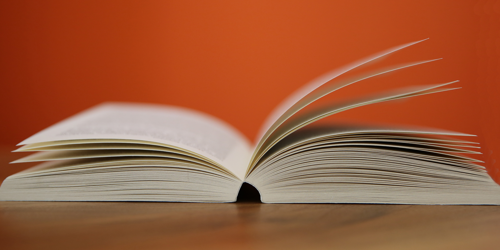

BOOKS information
home
element
about
contact
Content

A book is a medium for recording information in the form of writing or images, typically
composed of
many pages (made of
papyrus, parchment, vellum, or paper) bound together and protected by a cover. The technical
term
for this physical
arrangement is codex (plural, codices). In the history of hand-held physical supports for
extended
written compositions
or records, the codex replaces its predecessor, the scroll. A single sheet in a codex is a leaf
and
each side of a leaf
is a page.
As an intellectual object, a book is prototypically a composition of such great length that it
takes
a considerable
investment of time to compose and still considered as an investment of time to read. In a
restricted
sense, a book is a
self-sufficient section or part of a longer composition, a usage reflecting that, in antiquity,
long
works had to be
written on several scrolls and each scroll had to be identified by the book it contained. Each
part
of Aristotle's
Physics is called a book. In an unrestricted sense, a book is the compositional whole of which
such
sections, whether
called books or chapters or parts, are parts.
The intellectual content in a physical book need not be a composition, nor even be called a
book.
Books can consist only
of drawings, engravings or photographs, crossword puzzles or cut-out dolls. In a physical book,
the
pages can be left
blank or can feature an abstract set of lines to support entries, such as in an account book, an
appointment book, an
autograph book, a notebook, a diary or a sketchbook. Some physical books are made with pages
thick
and sturdy enough to
support other physical objects, like a scrapbook or photograph album. Books may be distributed
in
electronic form as
ebooks and other formats.
Although in ordinary academic parlance a monograph is understood to be a specialist academic work, rather than a reference work on a scholarly subject, in library and information science monograph denotes more broadly any non-serial publication complete in one volume (book) or a finite number of volumes (even a novel like Proust's seven-volume In Search of Lost Time), in contrast to serial publications like a magazine, journal or newspaper. An
avid reader or collector of books is a bibliophile or colloquially, "bookworm". A place where books are traded is a bookshop or bookstore. Books are also sold elsewhere and can be borrowed from libraries. Google has estimated that by 2010, approximately 130,000,000 titles had been published.In some wealthier nations, the sale of printed books has decreased because of the increased usage of ebooks
A codex (in modern usage) is the first information repository that modern people would recognize as a "book": leaves of uniform size bound in some manner along one edge, and typically held between two covers made of some more robust material. The first written mention of the codex as a form of book is from Martial, in his Apophoreta CLXXXIV at the end of the first century, where he praises its compactness. However, the codex never gained much popularity in the pagan Hellenistic world, and only within the Christian community did it gain widespread use.[12] This
change happened gradually during the 3rd and 4th centuries, and the reasons for adopting the codex form of the book are several: the format is more economical, as both sides of the writing material can be used; and it is portable, searchable, and easy to conceal. A book is much easier to read, to find a page that you want, and to flip through. A scroll is more awkward to use. The Christian authors may also have wanted to distinguish their writings from the pagan and
Judaic texts written on scrolls. In addition, some metal books were made, that required smaller pages of metal, instead of an impossibly long, unbending scroll of metal. A book can also be easily stored in more compact places, or side by side in a tight library or shelf space.
The fall of the Roman Empire in the 5th century AD saw the decline of the culture of ancient Rome. Papyrus became difficult to obtain due to lack of contact with Egypt, and parchment, which had been used for centuries, became the main writing material. Parchment is a material made from processed animal skin and used—mainly in the past—for writing on. Parchment is most commonly made of calfskin, sheepskin, or goatskin. It was historically used
writing documents, notes, or the pages of a book. Parchment is limed, scraped and dried under tension. It is not tanned, and is thus different from leather. This makes it more suitable for writing on, but leaves it very reactive to changes in relative humidity and makes it revert to rawhide if overly wet.
Monasteries carried on the Latin writing tradition in the Western Roman Empire. Cassiodorus, in the monastery of Vivarium (established around 540), stressed the importance of copying texts.[13] St. Benedict of Nursia, in his Rule of Saint Benedict (completed around the middle of the 6th century) later also promoted reading.[14] The Rule of Saint Benedict (Ch. XLVIII), which set aside certain times for reading, greatly influenced the monastic culture of the Middle Ages and is one of the reasons why the clergy were the predominant readers of books. The tradition and style of the Roman Empire still dominated, but slowly the peculiar medieval book culture emerged.
The Codex Amiatinus anachronistically depicts the Biblical Ezra with the kind of books used in the 8th Century AD. Before the invention and adoption of the printing press, almost all books were copied by hand, which made books expensive and comparatively rare. Smaller monasteries usually had only a few dozen books, medium-sized perhaps a few hundred. By the 9th century, larger collections held around 500 volumes and even at the end of the
Middle Ages, the papal library in Avignon and Paris library of the Sorbonne held only around 2,000 volumes. The scriptorium of the monastery was usually located over the chapter house. Artificial light was forbidden for fear it
may damage the manuscripts. There were five types of scribes: Calligraphers, who dealt in fine book production Copyists, who dealt with basic production and correspondence Correctors, who collated and compared a finished book with the manuscript from which it had been produced Illuminators, who painted illustrations Rubricators, who painted in the red letters
What is book benefit? Image result for book benefit Reading at home boosts school performance later on. It also increases vocabulary, raises self-esteem, builds good communication skills, and strengthens the prediction engine that is the human brain

Calling book lovers and avid readers of all ages! Have you ever wondered what the
benefits of reading
are aside from
leisure and education? From learning new words to maintaining your mental health, books can do it all! In case you needed a reminder of how important regular reading is for our wellbeing and literacy, here are the top 10 benefits of reading for all ages:
While reading, we have to remember different characters and settings that belong to a given story. Even if you enjoy reading a book in one sitting, you have to remember the details throughout the time you take to read
the book. Therefore, reading is a workout for your brain that improves memory function.
Did you know that most of the popular TV shows and movies are based on books? So why not indulge in
the original form of entertainment by immersing yourself in reading. Most importantly, it’s free with your Markham Public Library card.
We can all agree that reading cannot happen without focus and in order to fully understand the story, we have to concentrate on each page that we read. In a world where gadgets are only getting faster and
shortening our attention span, we need to constantly practice concentration and focus. Reading is one of the few activities that requires your undivided attention, therefore, improving your ability to concentrate.